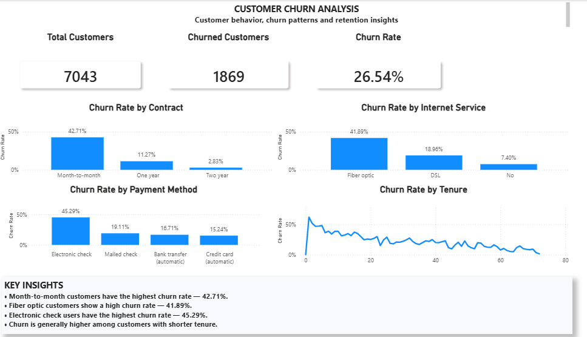
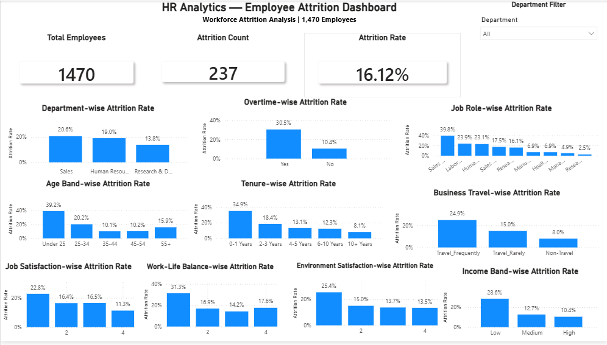

SQL
Joins, CTEs, aggregation, filtering and business-focused queries.
CORE SKILLDATA ANALYST · BANGLADESH
I turn raw data into clear insights, interactive dashboards and practical business decisions using SQL, Python, Power BI and Excel.
SQL · Python · Power BI · Excel
ABOUT ME
I'm Md. Javed Ali, a Data Analyst focused on turning messy data into clear, decision-ready insights.
I use SQL, Python, Power BI and Excel to clean, analyze and visualize data, then communicate findings through concise dashboards, reports and business-focused stories.
I enjoy working across the full analytical workflow—from asking the right question and preparing data to finding patterns and presenting actionable results.
MY SKILLS
Joins, CTEs, aggregation, filtering and business-focused queries.
CORE SKILLPandas, NumPy, data cleaning, EDA and analytical visualization.
CORE SKILLPower Query, DAX, KPIs and interactive dashboard design.
CORE SKILLData cleaning, formulas, PivotTables and analytical reporting.
CORE SKILLFEATURED WORK
Practical, end-to-end analytics projects focused on business questions and actionable insights.
An end-to-end analysis project focused on preparing sales data, exploring performance patterns and turning findings into business-ready insights.
PROJECT 02 · COMPLETED
An end-to-end customer analytics project focused on churn, high-risk segments and retention opportunities.

CUSTOMER ANALYTICS
An end-to-end customer churn analysis project focused on identifying high-risk customer segments and retention opportunities.
View Project ↗PROJECT 03 · COMPLETED
An end-to-end HR analytics project focused on employee attrition, workforce trends and retention insights.

PEOPLE ANALYTICS
An end-to-end HR analytics project analyzing employee attrition patterns and identifying higher-risk workforce segments.
View Project ↗GET IN TOUCH
I'm open to Data Analyst opportunities, collaborations and practical data projects. If you're hiring or building with data, let's connect.
javedali.analytics@gmail.com